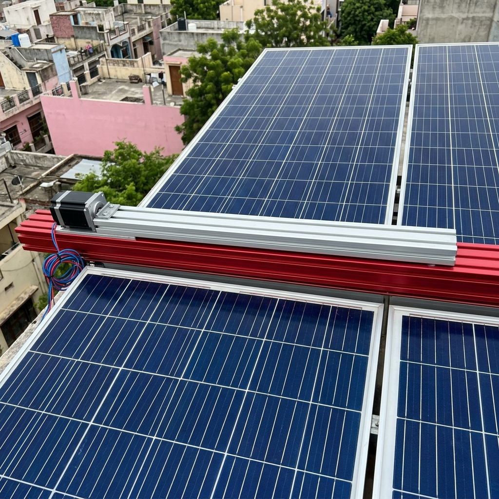
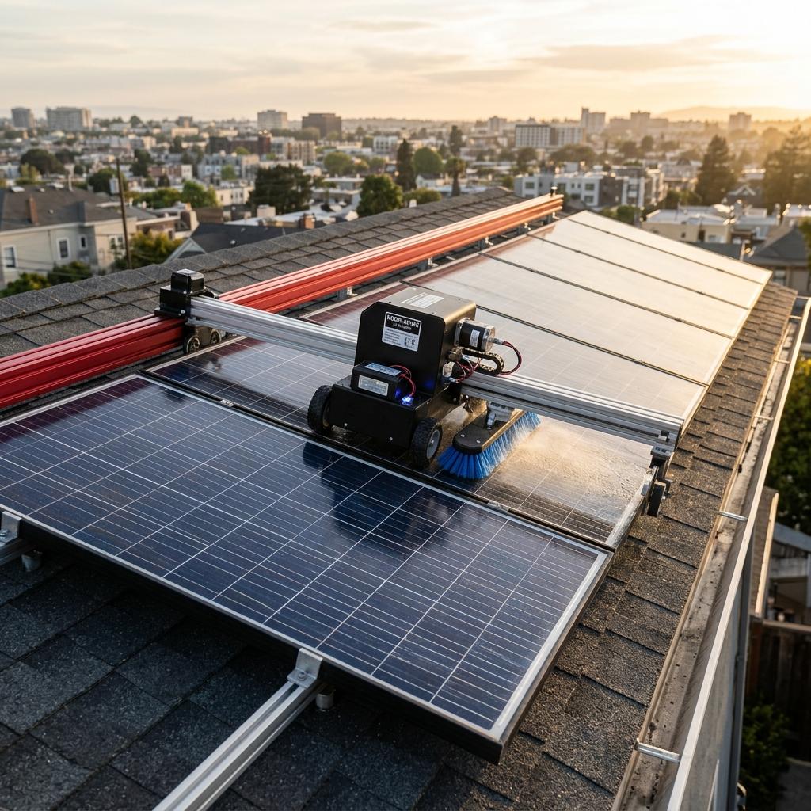
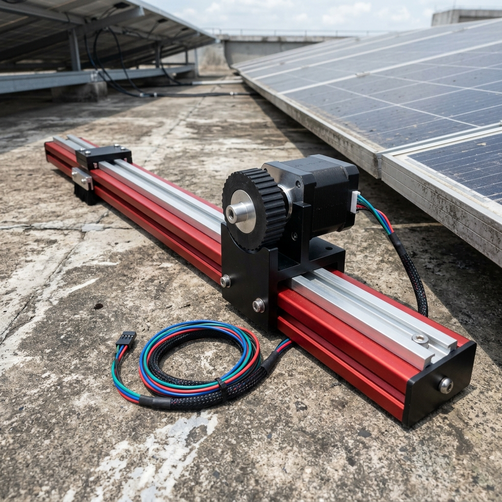

A self-designed linear-rail robotic system: water jets spray the panel surface, then a linear wiper sweeps it clean — just like a car windshield wiper, but on a rail.

Water jets spray the panel surface first. Then the wiper unit travels linearly along the rail — exactly like a car windshield wiper, but in straight horizontal motion — sweeping water and dust clean.
Photos from our actual rooftop installation and prototype testing.


A pipe runs across the panel array with individual jet nozzles positioned ahead of each panel — spraying water to loosen and soften dust before the wiper arrives.
The red part is a silicon squeegee wiper blade — just like a car windshield wiper rubber — that moves linearly across the panel, sweeping water and dust off the glass surface.
Silver T-slot aluminium extrusion spans the full panel width, acting as the precision track that guides the motor drive unit in a straight linear path.
An encoder DC motor is used — the built-in rotary encoder counts pulses as the motor turns, giving the microcontroller precise position feedback at all times. This allows exact control of travel distance during normal cycles.
The limit switch is not used during normal cycles. If a power cut stops the wiper mid-panel, the MCU restarts with no position memory. On restart, it drives the wiper toward the switch end until triggered — then uses the encoder to count the exact pre-set pulse distance from the switch back to home position.
The pump and motor are activated on a schedule — the jet sprays first, wiper follows, and the system stops automatically after each cycle.
The pump starts. Water flows through a pipe running along the top of the panel array, feeding individual jet nozzles positioned ahead of each panel row.
Each nozzle sprays a fine jet of water across the panel surface — loosening dust, bird droppings, and particulates, making them easy to wipe clean.
The DC motor drives the unit along the silver aluminium rail. The red silicon wiper blade moves in a straight horizontal stroke — exactly like a car windshield wiper rubber — sweeping water and dust cleanly off the glass.
The microcontroller drives the motor in reverse, returning the wiper to home position. The pump shuts off. The system idles until the next scheduled cycle.
Have questions about the build, want to collaborate, or need help replicating it for your installation?